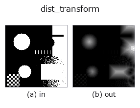

region op• Data kinds: region → image
• Call: fullseye.apply(img, "dist_transform", a=0.5, b=0.5) (2-D model = एक image + दो scalar knobs a,b∈[0,1])
• HALCON समकक्ष: distance_transform (अर्थ और parameters समझने के लिए HALCON reference उपयोगी है)

*Figure synthetic 128×128 input पर सच में चलाकर मिला output है। बाईं ओर input, दाईं ओर output। Point clouds ऊपर से देखे गए scatter के रूप में (brightness = z), 1-D series line के रूप में, volumes z दिशा में maximum-intensity projection के रूप में, videos बीच के frame के रूप में, complex images amplitude के रूप में, और जो return values चित्र नहीं बन सकते वे स्वयं values के रूप में दिखाए जाते हैं।*
*Output viridis जैसे pseudo-colour में है (गहरा बैंगनी = कम, पीला = अधिक), ताकि distance, phase, orientation, depth जैसे "मात्राओं के field" पढ़े जा सकें।*
*Knob a output नहीं बदलता (मापा गया: 0.1 / 0.5 / 0.9 पर एक जैसा)।*
*Knob b output नहीं बदलता (मापा गया: 0.1 / 0.5 / 0.9 पर एक जैसा)।*
Stages (पहले आने वाले ops → यह op, बाएँ से क्रम में):
▸ dist_transform: stages का figure (docs site)
दूसरी images पर भी (synthetic scene / photo / coins। ऊपर की row में inputs, नीचे की row में उनके outputs। Knobs default पर):
▸ dist_transform: दूसरी images पर output (docs site)
Euclidean distance transform। HALCON के distance_transform (Compute the distance transformation of a region.) के समकक्ष है।
a, b उपयोग नहीं होते। हर foreground pixel के लिए सबसे नज़दीकी background pixel तक की Euclidean distance निकाली जाती है (scipy.ndimage.distance_transform_edt), और _norm से उस image के भीतर के maximum को 1 पर normalise किया जाता है (image के बीच absolute distance की तुलना नहीं हो सकती)। skeletonisation, कणों के केंद्र की पहचान आदि के preprocessing में उपयोग होता है।
• gallery2d_region family guide
• Sample data catalog (DL URL / license) — 2-D के लिए skimage.data (BSD/public) + synthetic, 3-D के लिए real data sources (Stanford/PDS आदि) के DL URL।
• Operators का स्रोत और संदर्भ — इस op family के मूल research/methods के स्रोत।
• Algorithm का मानक स्रोत (लेखक, वर्ष) और उपयोग ऊपर की family usage guide में दिए गए हैं।
नीचे का program सच में चलता है, यह जाँचा गया है (figure वाला ही input)। Studio की help में यह block buttons बन जाता है, जिनसे इसे वहीं load करके चलाया जा सकता है।
threshold 0.50 0.50 dist_transform 0.50 0.50
▸ यह pipeline load करें · Load करके चलाएँ
• gallery2d_region — py -3.11 examples/gallery2d_region.py
• poc_bone_trabecular_thickness — py -3.11 examples/poc_bone_trabecular_thickness.py
image को input के रूप में लेते हैं)identity · gaussian · mean_box · bilateral · unsharp · median · min_filter · max_filter
region)reg_erode · reg_dilate · reg_open · reg_close · fill_holes · select_largest · remove_small · invert_region
*Provenance: ops.py — 2D operator registry. यह per-op note tools/opdocs.py md से अपने-आप generate होता है (हाथ से edit न करें)।*
© 2026 Kazufumi Furuse — Fullseye operator documentation. Licensed under Apache-2.0.